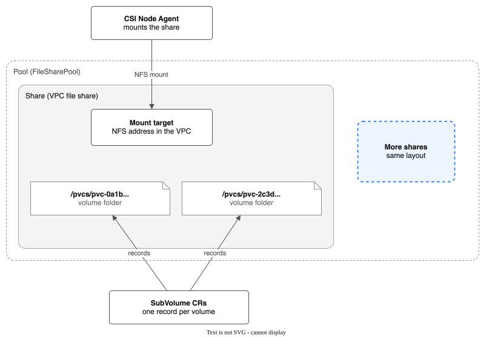

Context: the words this project uses¶
This page defines each word once. Other pages link here instead of defining the word again. Each entry has one example.
The meanings come from the code (api/v1alpha1/ and pkg/). If a page disagrees with this one, this one is right, and the page is a bug. Please report it.
For pictures you can click through, see the interactive diagrams.
Contents
- Storage: pool, share, mount target, SubVolume, volume, plain volume, VM disk, allocation strategy, auto-expand, tier, drain, StorageClass, staging, reclaim policy
- Copies in the same pool: snapshot, file snapshot, QEMU copy, instant snapshot, chain, overlay file, VM hook, Sidecar gate, flatten, clone
- How good a copy is: moment, file-system consistent, crash consistent, file copy, guest freeze
- Backup: backup, BackupPolicy, snapshot pool, keep time, restore, BackupRestore, restore point, change list, COS export, lock, backup key, browse session, browse helper
- Replication and failover: replication, ReplicationPolicy, destination, receiver, rewind, failover
- Other words: golden image, lifecycle hook, group snapshot, user workload monitoring, command-line plugins
Storage¶

Pool¶
A pool is a group of VPC file shares that the driver manages as one unit. You define it with a FileSharePool resource. A pool lives in one zone and has one share profile (dp2).
Example: the pool general-purpose has 3 shares of 1000 GB each, and every PVC on the ibm-vpc-file-pool StorageClass lands on one of them.
Share¶
A share is one VPC file share: an NFS export that IBM Cloud runs for you. A pool holds one or more shares. The driver creates a share in the background when a pool needs room. One exception: with auto-expand on, a PVC request that finds no share with room makes the share itself, and is told to retry.
Example: r006-1234... is a share of 1000 GB. It holds the folders of 40 PVCs.
Mount target¶
A mount target is the NFS address of a share inside your VPC. Nodes mount a share through it. The driver makes one mount target for each share. It sits in the pool's zone and serves nodes in every zone.
Example: 10.240.64.5:/share_abc123.
SubVolume¶
A SubVolume is the driver's record of one PVC: which share holds it, which folder it uses, and how big it is. It is a cluster-wide resource. It is named after the PersistentVolume (pvc-<uuid>).
Example: kubectl get subvolume pvc-0a1b... shows the pool, the share and the folder /pvcs/pvc-0a1b....
Volume¶
A volume is a PVC that uses a pool StorageClass. Its data is a folder (/pvcs/pvc-<uuid>) on one share. The docs also call this folder the subdirectory or the subPath. Each staged volume has its own NFS mount on a node (a second pod on the same volume reuses it); each pod sees only its own folder.
Example: the PVC db-data in the namespace apps is a volume of 20 GB.
Plain volume¶
A plain volume is a volume that is not a VM disk. It is a folder of ordinary files. A copy of it is a file copy, so it is only as consistent as its files are.
Example: the volume of a web server that stores uploaded images.
VM disk¶
A VM disk is a volume that a KubeVirt VirtualMachine uses as a disk. It is one raw file, disk.img, in the volume's folder. A snapshot, backup or replication of a disk of a running VM is a QEMU copy of all the VM's disks at one moment. A disk of a stopped VM is copied as a folder, like a plain volume.
Example: the PVC web-root is the boot disk of the VM web. Its folder holds disk.img.
Allocation strategy¶
The allocation strategy (spec.allocationStrategy) decides which share gets a new volume. spread picks the share with the most free space, so volumes spread out and one failure affects fewer of them. binpack picks the share with the least free space that still fits, so fewer shares are in use. The default is spread. Allocation only records a SubVolume and never calls the VPC.
Example: with spread, three new 10 GB volumes go to three different shares.
Auto-expand¶
Auto-expand (spec.autoExpand) lets the pool add a share by itself. The background reconciler starts one when the space given to volumes crosses expandThresholdPercent (default 80) of the pool, and it stops at maxShares. A volume request that finds no share with room also makes a share itself (tryAutoExpand, inside Allocate), and gets a retry error. While it works, the pool phase is Expanding. If a request finds no room while the pool expands, it is told to retry shortly. If the pool is at maxShares and full, it is refused.
Example: a pool of 2 shares of 1000 GB adds a third when volumes hold 1600 GB.
Tier¶
A tier is a named performance level inside one pool. Each tier has its own share size, IOPS and share count. The driver makes one StorageClass for each tier, named <pool>-<tier>, with the parameter tier.
Example: the pool has the tiers standard (100 IOPS) and fast (3000 IOPS).
Drain¶
To drain a share is to stop putting new volumes on it. You list the share in spec.drainShares. The driver also drains a share by itself when the VPC reports it failed or degraded. Volumes already on a drained share keep working. The driver does not move them or delete the share. The share is drained when no volume and no snapshot is left on it.
Example: you drain share A. It is drained once its last PVC and snapshot are gone. Then you can delete share A by hand.
Staging¶
Staging is the one NFS mount of a whole share on a node. Each volume on that node is then a bind-mount of its own folder from the staging mount into the pod. Ten pods on one node that use one share make one NFS connection.
Example: the node mounts share A once, and ten pods each see only their own folder.
Reclaim policy¶
The reclaim policy is the Kubernetes setting on the StorageClass that says what happens to a volume when its PVC is deleted. With Delete (the default), the driver removes the folder and the SubVolume. With Retain, Kubernetes keeps the PersistentVolume, and the SubVolume and the folder stay until you clean them up by hand. The driver has no archive mode.
Example: use Retain for a pool of data you must never lose by a mistaken delete.
StorageClass¶
A StorageClass tells Kubernetes to use this driver (vpc-file-pool.csi.ibm.io) and names the pool, and the tier if there is one. A VolumeSnapshotClass does the same for snapshots.
Example: the chart makes the StorageClass ibm-vpc-file-pool, and the driver makes one for each pool you create.
Copies in the same pool¶
Snapshot¶
A snapshot is a copy of one volume that stays on the same share as the volume. You ask for it with a Kubernetes VolumeSnapshot, and the driver records it in a Snapshot resource. A snapshot counts against the share's space. A snapshot does not protect you from the loss of the share. For that, use a backup.
A snapshot is made in one of three ways: a file snapshot, a QEMU copy or an instant snapshot. The annotation storage.ibmcloud.io/snapshot-method on the Snapshot says which one (file, vm or instant). For a VM disk that was not snapshotted instantly, status.methodReason says why.
Example: a snapshot of db-data is ready when kubectl get snapshot shows READY true.
File snapshot¶
A file snapshot is a snapshot that a Job makes by copying the volume's folder (cp -a) to /pvcs/.snapshots/snap-<name> on the same share. It is the way for a plain volume. It is only as consistent as the files are. Time passes while the Job copies.
Example: a 100 GB volume takes minutes to snapshot this way.
QEMU copy¶
A QEMU copy is a copy of the disks of a running VM that QEMU (the program that runs the VM) writes. All disks of the VM show the same moment. It copies the whole disk the first time, and then only the blocks that changed. A snapshot of a running VM's disk is a QEMU copy when instant snapshots are off. Backup and replication of a running VM also use it.
Example: a snapshot of a running VM with two disks gives two snapshots that show the same moment.
Instant snapshot¶
An instant snapshot is a snapshot of a VM disk that copies nothing. QEMU stops writing to the disk file and writes new data to a new file. The old file is the snapshot. It is ready in seconds, whatever the disk size. It needs the Sidecar gate. It is Experimental. See VM-INSTANT-SNAPSHOTS.md.
Example: a snapshot of a 500 GB disk is ready in 2 seconds.
Chain¶
A chain is the set of files of a VM disk that has instant snapshots. The last file is disk.img. Newer files are snap-<id>.qcow2. Each file holds only what changed after the file before it. The SubVolume lists them in status.diskChain, newest first. A VM with a chain needs the VM hook to start.
Example: snap-a1.qcow2, snap-b2.qcow2, disk.img.
Overlay file¶
An overlay file is one snap-<id>.qcow2 file of a chain. The project's design notes also call it an overlay. It is a file that holds only the changes made after the file below it.
Example: after two snapshots, a disk has two overlay files on top of disk.img.
VM hook¶
The VM hook is a small extra container that the driver adds to the pod of a VM that has a chain. KubeVirt runs it just before the VM starts. It tells the VM to open the newest file of the chain, not disk.img. The driver adds it only to VMs that have instant snapshots.
Example: the ConfigMap ibm-vpc-file-pool-vm-hook holds the hook script in the VM's namespace.
Sidecar gate¶
The Sidecar gate is the KubeVirt feature gate named Sidecar. KubeVirt refuses hook containers when it is off. Instant snapshots need it on. Red Hat does not support this gate, and OpenShift Virtualization then reports TaintedConfiguration. The chart can turn it on with vmSnapshots.enableSidecarGate=true, using a Job. The chart never turns it off.
Example: with the gate off, a snapshot of a VM disk is a QEMU copy, and status.methodReason says so.
Flatten¶
To flatten a VM is to delete all its instant snapshots so that each disk is one plain disk.img again. Each delete merges the snapshot's file back into the disk. Run kubectl pool-snapshots flatten <vm> -n <namespace>.
Example: flatten a VM before you turn the Sidecar gate off.
Clone¶
A clone is a new volume made from an existing volume. The clone worker, a background loop in the controller, runs the copy as a Kubernetes Job. A pod cannot mount the new volume until the copy ends: the node plugin answers Unavailable while status.cloneStatus is not Complete.
A clone is made for every volume size, and it prefers the share of its source.
Example: a PVC with dataSource: {kind: PersistentVolumeClaim, name: db-data} is a clone of db-data.
How good a copy is¶
Moment¶
A moment is the point in time that a copy, snapshot or backup shows. Moments are stored as UTC times in RFC 3339 form. All the disks of one VM in one copy show the same moment.
Example: 2026-10-21T09:30:00Z.
File-system consistent¶
A copy of a VM disk is file-system consistent when the driver froze the guest's file systems for the instant of the copy. The guest wrote its pending data first. A VM that starts from the copy needs no repair. The status field consistency says FileSystemConsistent.
Example: the copy of a Linux VM with a working guest agent.
Crash consistent¶
A copy of a VM disk is crash consistent when the file systems were not frozen. The disk is as it would be after a power loss. A VM that starts from the copy may need a file-system check. The status field consistency says CrashConsistent, and consistencyReason says why the freeze did not happen (for example, no guest agent).
Example: the copy of a VM that has no guest agent.
File copy¶
File copy is the consistency of a copy of a plain volume. The driver copies files one by one while they may still change, so the copy is not one moment. The status field consistency says FileCopy. For a database, stop it or use a lifecycle hook first.
Example: a backup of a volume that holds a log folder.
Guest freeze¶
A guest freeze is a request through the VM's guest agent. The guest writes its pending data and holds new writes for a moment. The driver freezes a guest for the QEMU copy, and the guest thaws by itself after 30 seconds at most. OpenShift does its own freeze when you take a VM snapshot from the console. For an instant snapshot, the driver then does not freeze again.
Example: a freeze of 0.15 seconds was measured in a lab test.
Backup¶
Backup¶
A backup is a copy of a volume or VM, made on a schedule. The driver keeps it on a different share, in a snapshot pool. It keeps many moments. A backup survives the loss of the data share. It does not survive the loss of the whole VPC unless you also export it to COS.
Example: a backup every 6 hours, kept for 14 days.
BackupPolicy¶
A BackupPolicy says what to back up: a label selector, optionally limited to namespaces. It also names the snapshot pool, the schedule and the keepFor time. If any disk of a VM matches the selector, all its disks are backed up together. The controller makes the matching ReplicationPolicy objects itself. Do not edit them.
Example: selector: {matchLabels: {backup: "yes"}} backs up every PVC with the label backup=yes.
Snapshot pool¶
A snapshot pool is a pool that holds only backups. It must hold no workload volumes. The driver refuses a pool that has any. It may have several shares. A volume stays on the share where its first backup went. Above 85% full, a share gets no new backups, and backups are never deleted to make room. This is not the same as a snapshot, which stays next to the volume.
Example: the pool backups has one share of 2000 GB and no PVCs.
Keep time¶
The keep time (keepFor) is how long backups are kept. It is a Go duration such as 36h, or a number of days such as 30d. The default is 7 days. The shortest is one hour. A volume that is deleted keeps its backups until the keep time has passed since its last backup.
Example: keepFor: 14d.
Restore¶
To restore is to make a new PVC from a backup or a snapshot. A restore never writes over a volume that exists. The new PVC is held back from pods until the copy ends. Run kubectl backup restore for a backup, which also works after the source volume is gone. Use a PVC dataSource or the console for a snapshot.
Example: restore vms/web-root as it was at 09:00 into the new PVC vms/web-root-restored.
BackupRestore¶
A BackupRestore is the request that kubectl backup restore creates. Its status.phase goes Pending, Provisioning, Restoring, then Done or Failed.
Example: kubectl get backuprestore shows restore-web-root-lq3x9a Done.
Restore point¶
A restore point is an earlier moment of a volume that you can still go back to. For a VM disk, the latest copy is whole. Each earlier moment is an undo file. It holds the old contents of the blocks that the next copy changed. For a plain volume, each earlier moment is a folder of hard links, so a file that did not change takes no extra space. Restore points older than the keep time are removed.
Example: with a copy every 6 hours and a keep time of 24 hours, a disk has about 4 restore points.
Change list¶
A change list is QEMU's record of the blocks of a VM disk that changed since the last good copy. The next copy sends only those blocks. If the VM restarts or moves, the change list is lost and the next copy is a full copy. In the code it is a QEMU dirty bitmap, and the status field is vmChangeList.
Example: after the first copy of a 100 GB disk, a copy sends only the 81 MB that changed.
COS export¶
A COS export sends backups to an IBM Cloud Object Storage (COS) bucket, encrypted before they leave the cluster. You turn it on with spec.export in a BackupPolicy. A problem with the export never stops the backups to the snapshot pool. Restore from COS works in any cluster that runs the driver.
Example: kubectl backup restore --from-cos in a new cluster after the VPC is lost.
Lock¶
A lock is the COS object lock on exported backups. With lock: Compliance, nobody can delete the data or shorten the keep time before it ends. With lock: None, there is no lock. A Compliance lock cannot be undone, and locked data is billed until the lock ends.
Example: keepFor: 30d with lock: Compliance holds each exported backup for 30 days.
Backup key¶
The backup key encrypts exported backups. The driver stores it only wrapped by an IBM Key Protect root key. Jobs unwrap it with the API key of a service ID (held in a Secret) that has the Reader role on the root key. The readable key is shown once, by kubectl backup cos-setup, and you must keep a copy outside IBM Cloud.
Example: restore with --backup-key-file ./backup-key.txt if Key Protect is gone.
Browse session¶
A browse session is one open look into one backup, kept as a BackupBrowse resource. Users never make or see it: the backup gateway makes it after checking their rights. The backup controller runs a browse helper for it and ends it when idle, at the hard limit, or when it is closed.
Example: session for the backup of apps/db, open for 20 minutes, closed because it was idle.
Browse helper¶
The browse helper is a small program in its own image (browse) that reads one backup folder, read-only, for the browse feature. It runs in a pod as root with no capabilities, on a read-only mount. It never follows a link, and it ends by itself when idle or after a time limit. Users never talk to it directly.
Example: it lists /var/www of last night's backup of the volume web-data.
Replication and failover¶
Replication¶
Replication copies volumes to a destination on a schedule. The destination is another pool or another cluster. If the source site is lost, you can start the workload there. By default it keeps only the latest copy of a plain volume (a backup keeps more moments). A plain volume is copied in one of two ways. In direct NFS mode (no destinationEndpoint), rsync copies it and only the files that changed cross the network (incrementalSync, on by default). In receiver mode (destinationEndpoint set, the mode for another cluster), the driver packs the whole folder into one tar stream and uploads all of it each cycle (pkg/replication/syncclient.go); incrementalSync does not reduce what is sent. A running VM is copied with a QEMU copy, all disks at one moment. The destination keeps restore points of VM disks for restorePointKeepHours (default 24).
Example: replicate the pool production in Frankfurt to a pool in London every 15 minutes.
ReplicationPolicy¶
A ReplicationPolicy names the pool to copy (sourcePoolName, with an optional label selector). It names the destination, which is an NFS server or a receiver's URL. It also sets the schedule. It also sets the speed limit for VM copies (vmCopySpeedLimitMBps, default 20) and optional lifecycle hooks.
Example: schedule: 15m.
Destination¶
The destination is where replicated data goes. It is a pool on another cluster or in another region, or a snapshot pool for a backup. Source and destination are roles of a copy, not kinds of cluster.
Example: the DR cluster is the destination of the policy prod-to-dr.
Receiver¶
The receiver is a small HTTPS service on the destination cluster (replicationReceiver.enabled=true in the chart). Jobs on the source cluster send data to it with a bearer token. It writes the data to the destination share and applies VM copies. With a receiver, the source cluster needs no NFS route to the destination.
Example: https://repl-receiver.apps.dr.example.com.
Rewind¶
To rewind a VM disk at the destination is to put it back to an earlier restore point. You rewind before you start the VM, with kubectl failover ... --rewind-to. After a VM has run on a disk, the disk no longer matches its restore points, and the driver refuses to rewind it.
Example: --rewind-to 2026-10-21T09:00:00Z starts the VM as it was at 09:00.
Failover¶
Failover is making the replicated volumes usable on the destination cluster, so you can start the workload there. kubectl failover execute reads the metadata that replication left on the destination share, and creates the SubVolume, PersistentVolume and PVC for each volume. For a running VM it picks the newest moment that all the VM's disks can show. It does not start the workload, and it does not change DNS.
Example: kubectl failover plan shows an RPO of 14 minutes, so you run execute.
Other words¶
Golden image¶
A golden image is a ready-to-boot VM disk kept on pool storage. The golden image syncer finds CDI DataImportCron images and imports each one with a CDI DataVolume. It is Hidden: the code stays, but the console does not offer it. Use the standard OpenShift catalog instead. See GOLDEN-IMAGE-WORKFLOW.md.
Example: the DataVolume golden-centos-stream9 in a target namespace.
Lifecycle hook¶
A lifecycle hook is an action the hook orchestrator in the controller runs before or after a replication sync. It is either a command run in a pod (exec) or a web call (http). onError is Abort (the default) or Continue. Do not confuse it with the VM hook.
Example: an http hook that asks an application to flush its data before a sync.
Group snapshot¶
A group snapshot (VolumeGroupSnapshot) was meant to snapshot several volumes together. It is not active. Nothing acts on the resource. A snapshot of a running VM already covers all its disks at one moment. See KNOWN-LIMITATIONS.md.
Example: do not create one; use a VM snapshot instead.
User workload monitoring¶
User workload monitoring is the part of OpenShift's monitoring that reads your own projects. OpenShift's platform monitoring reads only the platform projects, and Red Hat does not support adding your own projects to it. The driver runs in kube-system, so its alerts and scraping are in a small namespace, ibm-vpc-file-pool-csi-monitoring, that only user workload monitoring reads. An admin turns it on once with enableUserWorkload: true in openshift-monitoring/cluster-monitoring-config. Without it no alert fires. See MONITORING.md.
Example: oc -n openshift-user-workload-monitoring get pods lists prometheus-user-workload when it is on.
Command-line plugins¶
The driver ships four kubectl plugins:
kubectl backuplists, restores and deletes backups, sets up COS and restores from COS.kubectl failoverplans and runs a failover on the destination cluster.kubectl pool-snapshots(the file iskubectl-pool_snapshots) flattens the instant snapshots of a VM.kubectl migratemoves PVCs from the stock IBM CSI driver to a pool.
Example: kubectl backup list --policy nightly.